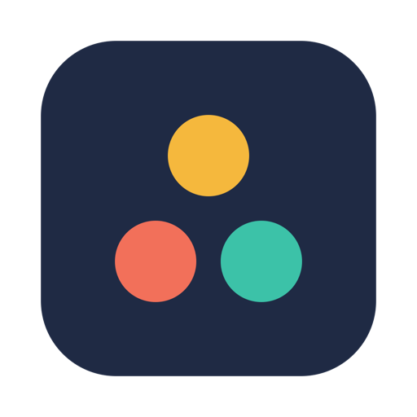

Jugglinator
One hotkey to cycle through your parallel AI chats on macOS. Like ⌘⇥, but for tasks instead of apps.
Download for macOS 14+Free and open source (MIT) · Apple silicon · Source on GitHub
Not notarized yet: on first launch see First launch.
The problem
You have three Claude Code sessions working on three branches, a ChatGPT thread where you are drafting a spec, a Claude chat with a design review, a Terminal tab with the tests and a Chrome tab with the docs. Each of them is one task. ⌘⇥ shows you apps, not tasks. Window switchers show you windows, but two Claude Code sessions are the same window and two ChatGPT threads look identical in a list. So you click around, lose track of which agent has been waiting for you for an hour, and forget the one that has finished.
Jugglinator is a menu bar app that keeps the list of those tasks and cycles through them with a hotkey. On each switch it opens exactly the bound thing: the chat, the session, the thread, the tab. A colored circle in the menu bar shows the task you have neglected the longest.
What it does
- One hotkey, next task. ⌃⇥ goes to the next task, ⌃⇧⇥ to the previous one, in a fixed 1→2→3→1 order. A small card shows the task number, title and how long you were away. It does not take focus.
- Add the current window as a task. ⌃⌥⇥ in any window makes it a task; the same hotkey in a window that is already a task removes it. No typing, no forms.
- Deep bindings, not just window titles. Jugglinator reopens the exact chat or tab, even after the app was restarted:
- Claude desktop: the chat by its UUID (
claude://link). - Claude Code (the Code tab in Claude desktop): the session by its id, with the session title as the task name.
- ChatGPT desktop: the thread by its id, found through ChatGPT's local thread index.
- Google Chrome: the tab by id, then by URL.
- Terminal.app: the window and tab by tty.
- Any other app (Cursor, VS Code, iTerm2, Safari…): the window by title.
- Claude desktop: the chat by its UUID (
- Mark a task done with ⌃§ (⌃` on an ANSI keyboard); done tasks are skipped in the cycle. Press again to bring it back, or clear them all with "Delete Done Tasks" in the menu.
- The menu bar circle turns green → yellow → orange → red as the longest-waiting task waits 10, 30 and 60 minutes. Hover it to see which task that is.
- An MCP server for your AI assistant. Turn on "MCP server" in Settings and Claude Desktop, Claude Code or ChatGPT (Codex) can list your tasks, switch to one, add the current window, mark tasks done and edit notes. See the setup snippets.
- Private by design. No account, no network, no analytics. Jugglinator reads a few local files (ChatGPT's thread index, Claude Code session titles) and writes its own
tasks.json. No third-party dependencies, about 3 MB on disk. - 12 languages: Arabic, Chinese (Simplified), English, French, German, Hindi, Italian, Japanese, Korean, Portuguese (Brazil), Russian, Spanish. Switch in Settings → Language without a restart.
Who it is for
- Developers running several Claude Code, Codex or other agent sessions in parallel and switching between them while they work.
- Anyone who keeps a handful of long-running ChatGPT or Claude conversations open as "projects" and wants to get back to the right one in one keystroke.
- People with a million tabs and windows who want a short list of the ones that matter today, and a reminder of which one they have been ignoring.
Install
Download. Get Jugglinator.app.zip from the latest release, unzip, move Jugglinator.app to Applications. Requires macOS 14 or later. The release build is for Apple silicon; on an Intel Mac build from source.
Build from source. Only the Command Line Tools with Swift 6.x are needed; full Xcode is not required.
git clone https://github.com/sefimov/jugglinator.git && cd jugglinator
scripts/bundle.sh # build, sign and self-test build/Jugglinator.app
ditto build/Jugglinator.app /Applications/Jugglinator.app
open /Applications/Jugglinator.app # a colored circle appears in the menu barFirst launch
- Open
Jugglinator.app. macOS says it cannot verify the developer: open System Settings → Privacy & Security and click "Open Anyway". Or runxattr -dr com.apple.quarantine /Applications/Jugglinator.apponce. - On the first binding Jugglinator asks for Accessibility and, for Chrome and Terminal, Automation permissions. It asks only when needed and works with less if you decline.
- Optional: turn on "Launch at login" in Settings.
Hotkeys
| Hotkey | Action |
|---|---|
| ⌃⇥ | Next task |
| ⌃⇧⇥ | Previous task |
| ⌃⌥⇥ | Add or remove the current window |
| ⌃§ (⌃` on ANSI keyboards) | Mark done / back to work |
All hotkeys can be changed in Settings → Hotkeys. While Jugglinator is running, ⌃⇥ and ⌃⇧⇥ no longer switch tabs in Chrome, Safari, Terminal, VS Code or Xcode; reassign them if that gets in the way.
How it compares
| What it switches | Jumps to a specific Claude Code session or ChatGPT thread | Shows what you have neglected | |
|---|---|---|---|
| ⌘Tab, Stage Manager, Spaces | apps, windows, desktops | no | no |
| AltTab, Contexts, rcmd, Witch | windows by title | no: two sessions are the same window | no |
| tmux, iTerm2 profiles | terminal panes | terminal only | no |
| Raycast / Alfred window commands | windows | no | no |
| Jugglinator | a short list of tasks you chose | yes: chat, session, thread, tab, tty | yes: menu bar circle, "away N min" |
Jugglinator is not a replacement for ⌘⇥ or a window manager. It is a task list for the two to ten things you are actively juggling, with a hotkey that always lands on the right one.
FAQ
With the desktop apps. Claude chats and Claude Code sessions are opened by
claude:// links, ChatGPT threads by codex:// links. A chat open in a Chrome tab is bound as a Chrome tab, which also works.Yes, as a window: Jugglinator remembers the app and the window title and raises that window. Deep bindings (tab, session, thread, tty) exist for Chrome, Claude, Claude Code, ChatGPT and Terminal.app.
No. It has no network code. It reads ChatGPT's local
session_index.jsonl and Claude Code's local session files to learn thread ids and titles, and stores its own list in ~/Library/Application Support/Jugglinator/tasks.json.The release is ad-hoc signed and not notarized with an Apple Developer ID. "Open Anyway" in System Settings or the
xattr command above fixes it once. The source is on GitHub if you prefer to build it yourself.Yes. Hotkeys are bound to physical keys, not characters, so ⌃⇥ and ⌃§ work in any layout.
Yes. Jugglinator has a built-in MCP (Model Context Protocol) server, off by default. Turn on "MCP server" in Settings, then add
/Applications/Jugglinator.app/Contents/MacOS/Jugglinator --mcp as a stdio server to Claude Desktop, Claude Code (claude mcp add jugglinator -- /Applications/Jugglinator.app/Contents/MacOS/Jugglinator --mcp) or ChatGPT desktop / Codex. The assistant gets list_tasks, switch_to_task, add_current_window, mark_done, mark_in_progress and set_note. It talks to the running app over a local Unix socket; nothing goes over the network. Setup snippets in the README.No. Homebrew casks now require notarized apps, and the App Store sandbox does not allow the Accessibility and Apple Events access Jugglinator needs. Download the zip or build from source.
GitHub issues. Say which app and what the window title looks like.